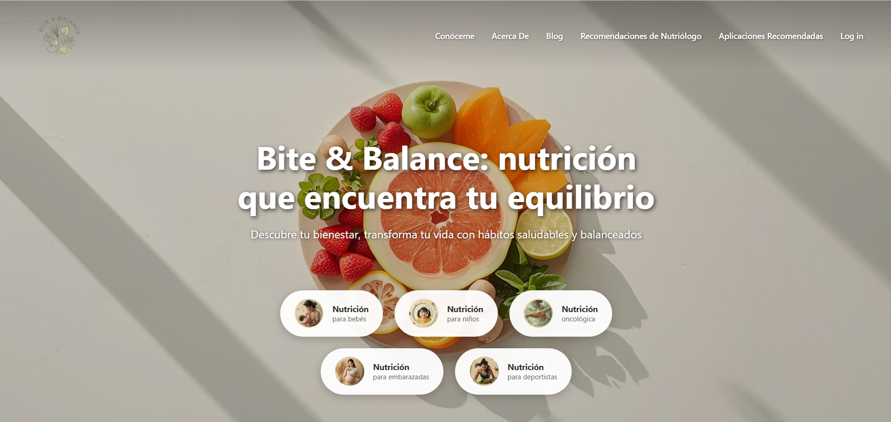
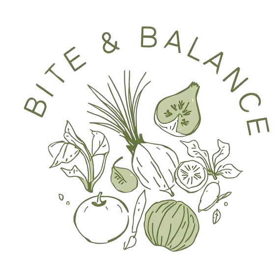
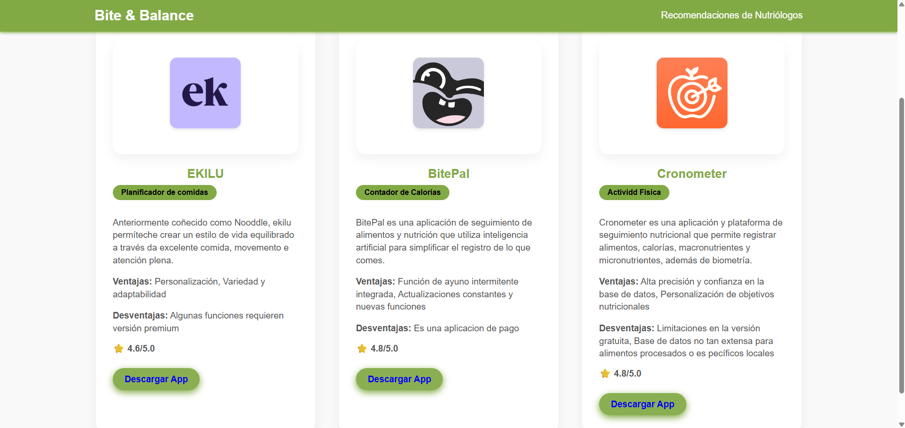
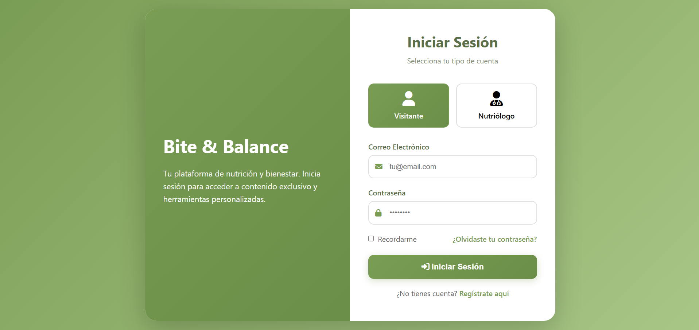
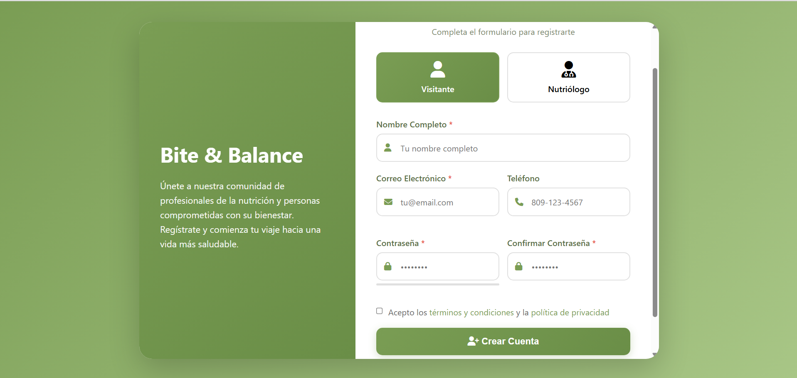

Proyecto universitario · Desarrollo web
Bite & Balance
Plataforma web de nutrición y bienestar
Desarrollada como proyecto universitario para conectar profesionales de la nutrición con personas interesadas en mejorar sus hábitos alimenticios. Integra contenido especializado, herramientas relacionadas con nutrición y funcionalidades adaptadas al tipo de usuario.
Página principal
Introduce la propuesta de la plataforma y presenta áreas de nutrición para distintas necesidades y etapas de vida.

El problema
La orientación nutricional suele encontrarse en información dispersa, aplicaciones con funciones específicas y plataformas que separan el contenido del acceso a profesionales. El proyecto exploró cómo integrar estos elementos en una experiencia unificada.
Investigación
Se analizaron plataformas similares, sus patrones de navegación y estructuras de contenido para identificar oportunidades de mejora. A partir de ese análisis se definieron dos perfiles principales: visitantes y nutriólogos, con necesidades y recorridos diferentes.
Identidad visual

Verdes naturales, fondos claros, tonos crema y formas suaves vinculan la plataforma con la salud, el bienestar y la nutrición. La identidad buscó transmitir confianza, cercanía y profesionalismo, sin adoptar una estética clínica.
Proceso de diseño
El diseño pasó por varias iteraciones para atender a los dos perfiles de usuario. Se trabajaron la navegación, la jerarquía visual, la consistencia entre pantallas y los formularios, junto con la separación entre perfiles y la adaptación responsive.
La solución
Bite & Balance se desarrolló como una plataforma web académica con distintos módulos para visitantes y nutriólogos. Incluye contenido, autenticación, registro, recomendaciones, perfiles e interacción dentro de la plataforma, con acceso a funciones según el tipo de usuario.
El sistema requiere un entorno PHP local para ejecutarse. Algunas vistas no se muestran aquí; sus módulos forman parte de la plataforma desarrollada originalmente. Este case study reúne las capturas disponibles.
Aplicaciones recomendadas
Presenta herramientas externas relacionadas con nutrición y bienestar. Cada ficha muestra nombre, categoría, descripción, ventajas, desventajas, valoración y un enlace de descarga.

Inicio de sesión
La autenticación distingue entre visitante y nutriólogo. La selección de perfil forma parte de una experiencia adaptada al tipo de usuario, con acceso mediante correo electrónico y contraseña.

Registro
El registro mantiene la selección entre visitante y nutriólogo para crear la cuenta correspondiente. La vista disponible solicita nombre completo, correo electrónico, teléfono y contraseña con confirmación, además de la aceptación de términos y política de privacidad.

Trabajo realizado
- Investigación de plataformas similares y definición de perfiles de usuario.
- Organización de la navegación y de la jerarquía de contenido.
- Diseño de interfaces, formularios y adaptación responsive.
- Implementación de vistas y desarrollo web del sistema.
Tecnologías utilizadas
Aprendizajes
Fue uno de mis primeros proyectos con un flujo más completo de diseño y desarrollo. Atender a múltiples tipos de usuario fue uno de los principales retos y me ayudó a entender que una buena interfaz depende tanto de su estructura y funcionamiento como de su estética.
La investigación previa influyó en las decisiones posteriores. Si retomara el proyecto, dedicaría más tiempo a esa etapa y comenzaría el diseño en una herramienta como Figma, considerando el responsive desde el inicio.
Resultado
El proyecto universitario dio lugar a una plataforma desarrollada con distintos perfiles y módulos. Permitió aplicar conocimientos de UX/UI y desarrollo web en una solución digital de mayor escala y trabajar la relación entre contenido, navegación y funcionalidades.
Hablemos de tu proyecto
Si quieres conocer más sobre mi trabajo o conversar sobre una idea, puedes escribirme.